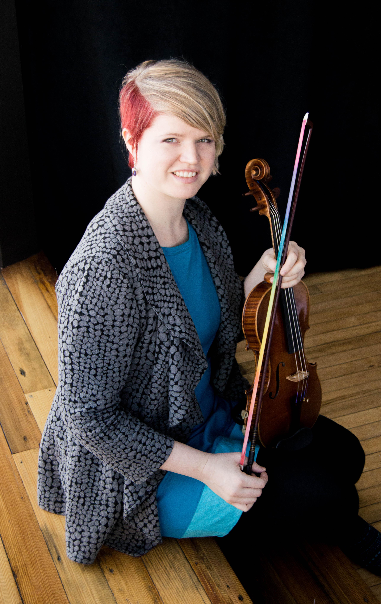

Performance background
An avid performer, Kathleen Covalt began violin lessons at age 6 and has concertized since she was 8 years old. She has performed chamber music at venues across the USA and in Europe including performances at the Kennedy Center for the Performing Arts (Washington DC), La Madeleine (Paris), the Cape Cod Chamber Music Festival (MA), the Fisk Mansion (San Francisco), and the Mendocino Music Festival (CA).
As a member of the Kalliope Duo, Kathleen was the recipient of the Southeastern Minnesota Arts Council Grant 2016/17 and as the violinist of the Odelia Piano Trio was selected as the Minnesota Public Radio Classnotes Artists for Rochester during 2013-2014. She is a first violinist with the Rochester Symphony Orchestra, MN since 2011 where she holds the Jay & Carolyn Beck Chair.
Kathleen has performed with the San Francisco Academy Orchestra, Mendocino Festival Orchestra, Metropolitan Symphony Orchestra, San Francisco Conservatory Orchestra, Texas Music Festival Orchestra, and the Kennedy Center Music Institute Orchestra. In 2012 Kathleen performed as a soloist with the St. Croix Valley Symphony Orchestra.
Teaching background
An enthusiastic educator, Kathleen Covalt has taught students age 3-year-old to adult in private and group settings since 2000. She has taught in public and private schools in San Francisco, CA, Redwing, MN, River Falls, WI, and Rochester, MN. Kathleen’s students have won college music scholarships, attended all state orchestra, and placed in local competitions. Kathleen is the owner of KML Violin & Viola Studio in Rochester, MN where she shares her passion of music with the next generation.
Kathleen has completed hundreds of hours of Suzuki teacher training and studied Suzuki pedagogy with master teachers: Sherry Cadow, Carol Dallinger, Christie Felsing, Nancy Jackson, Edward Kreitman, Alice Joy Lewis, Vera McCoy-Sulentic, Edmund Sprunger, and Patricia D’Ercole. Kathleen is a former president of the Southeastern Minnesota Suzuki Association.
Kathleen’s teaching style is a blend of Suzuki and traditional methods. She focuses on teaching beautiful tone and expressive playing with a solid foundation of technique. Kathleen incorporates essentials of ear training, musicality, and good posture through a diverse music repertoire in order to give students a well-rounded musical education.
Education
Kathleen Covalt holds a Bachelor of Music in Violin Performance from the San Francisco Conservatory of Music, where she studied violin with Ian Swensen and chamber music with Mark Sokol and Yoshikazu Nagai. Other major mentors include Ray Shows and Nancy Oliveros of the Artaria String Quartet.